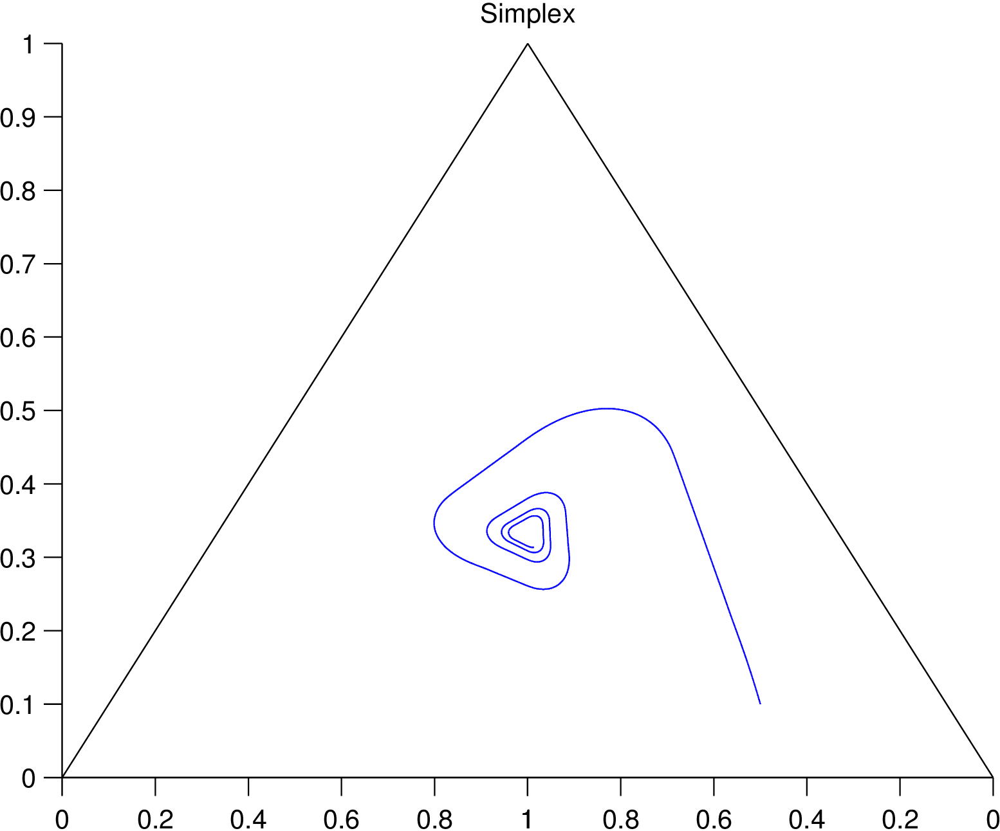
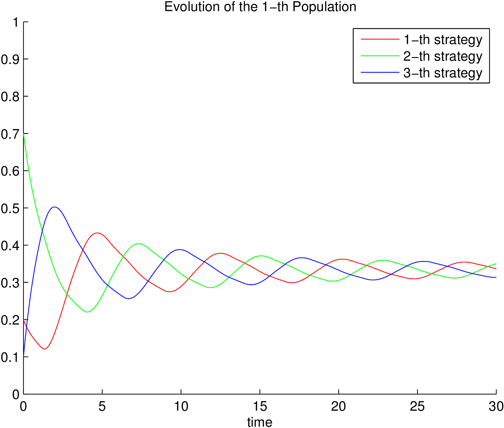
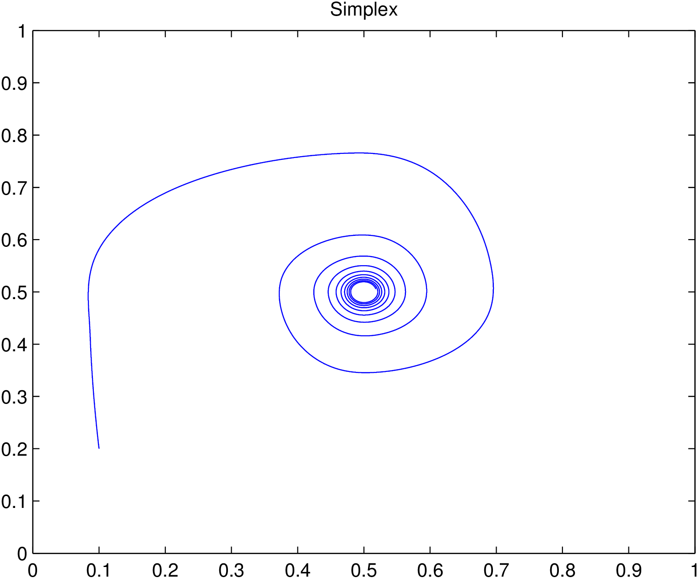
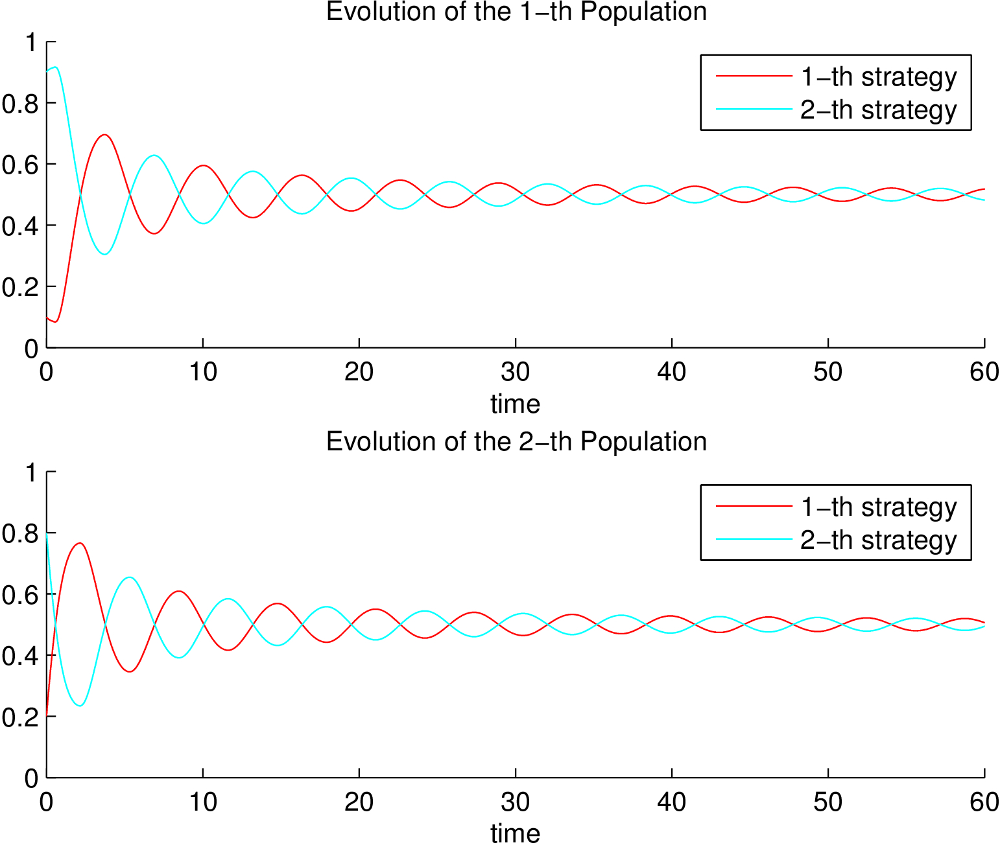

BDT_latex.py is a program that automates the Belcher Diagnostic Test for LaTeX documents. The Belcher Diagnostic Test was invented to improve academic writing by Wendy Laura Belcher in her book Writing Your Journal Article in Twelve Weeks: A Guide to Academic Publishing Success. The program is designed to implement the test on projects that use multiple files, such as TeX files or images. Instructions on using the test to improve writing are in Belcher's book.
PDToolbox is a matlab implementation of some evolutionary dynamics from game theory. The current version supports the implementation of replicator dynamics, Maynard Smith's replicator dynamics, Smith dynamics, logit dynamics, and Brown-von Neumann-Nash dynamics. Also, it can be used to run revision protocols, that is, population games with small number of agents per population.
Example of rock-paper-scissors game:
|  |  |
Example of matching pennies game with two populations:
|  |  |
Tool designed to erase or load binary images into FPGA embedded memories. Flash load interacts with a wishbone compliant SoC.
Signal viewer shows, in real time, the value of FPGA's internal signals. It implemented in Verilog.